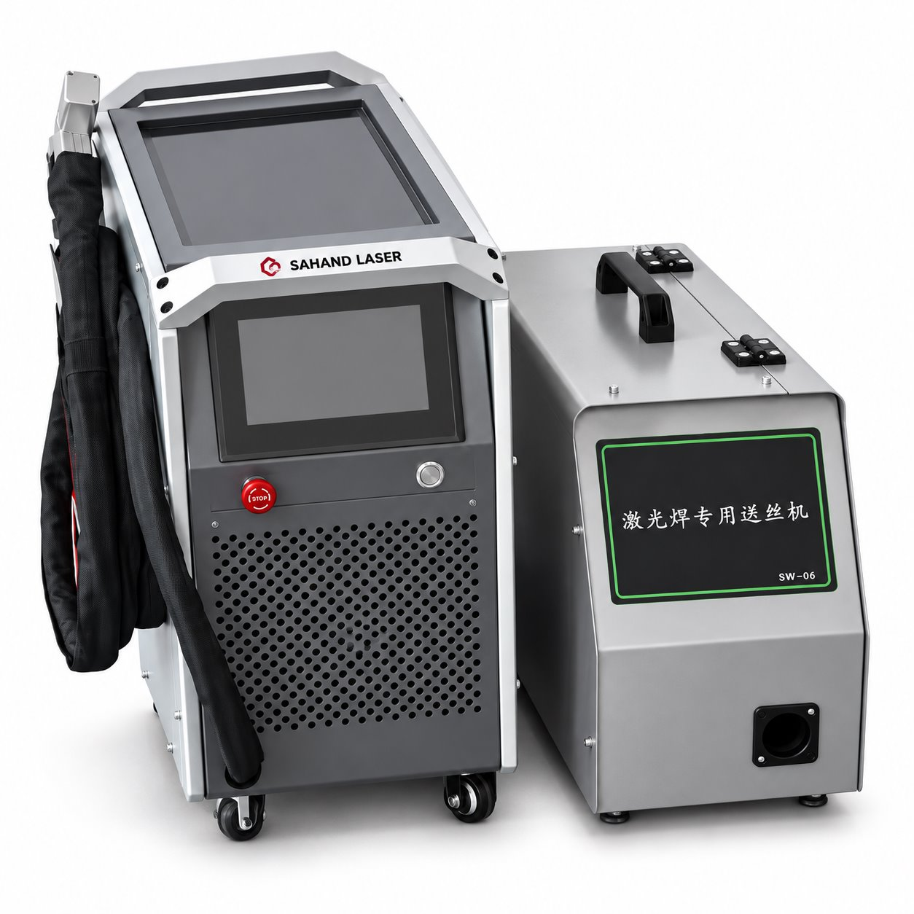

WL-003
نام و هویت محصول از فهرست ثبتشدهٔ سهند لیزر نقل شده است. اطلاعات سازنده، گزینههای خانواده و تصویر مرجع به معنی تأیید موجودی یا پیکربندی نصبشده نیست.


supplied series photograph or CAD
سند تطبیق
اطلاعات ثبتشده و دامنهٔ آن
| نوع محصول درجشده در پوستر | جوش لیزر هواخنک دامنهٔ ثبت: user_supplied_artwork · منبع |
|---|---|
| توانهای درجشده در پوستر | ۸۰۰ تا ۱۵۰۰ وات؛ مدل و شرایط دقیق تفکیک نشده است دامنهٔ ثبت: user_supplied_artwork · منبع |
| محدودیت انتقال | این ادعاها به WL-004 یا دیگر مدلهای جوش منتقل نمیشوند دامنهٔ ثبت: user_supplied_artwork · منبع |